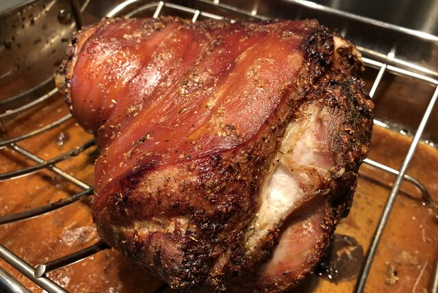

Pernil

Pernil is roasted pork shoulder, seasoned to the max. It is served with rice and beans, salad, or sweet plantains.
Ingredients
- 1/4 cup olive oil
- 3 tablespoons white vinegar
- 10 cloves garlic, or more to taste
- 2 tablespoons dried oregano
- 1 tablespoon salt
- 1 1/2 teaspoons ground black pepper
- 5 pounds pork shoulder, trimmed of excess fat
Steps
Combine olive oil, vinegar, garlic, oregano, salt, and black pepper in a mortar and pestle; mash into a paste.
Make deep slits into the pork with a small kife. Stuff slits with the paste; rub any remaining paste over the pork.
place pork in a plastic roasting bag and put in a roasting pan with a rack. Let marinate in the refrigerator, 8 to 48 hours.
Take ppork out of the refrigerator, uncover, and bring to room temperature, 1 to 2 hours.
Preheat oven to 300 degrees F (150 degrees C).
Roast pork skin-side down in the preheated oven u ntil golden brown, about 2 hours. Flip pork and continue roasting, skin-side up, until juices run clear and an instant-read thermometer inserted into the center reads at least 145 degrees F(63 degrees C), 2 to 4 hours more.